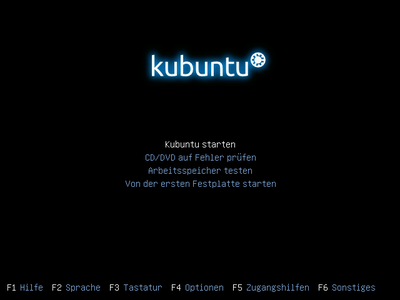
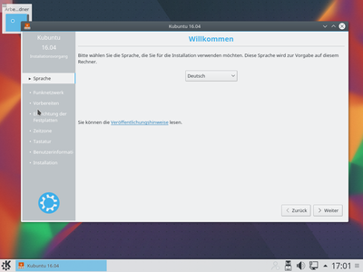
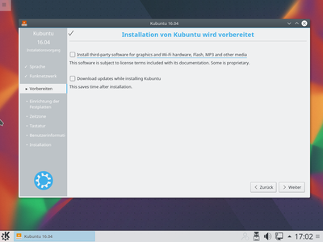
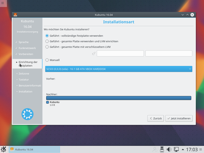
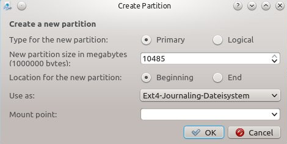
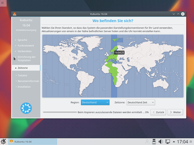
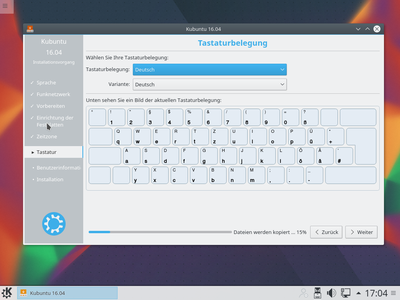
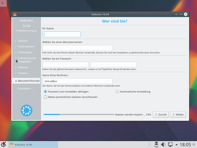

Kubuntu Installation
Dieser Artikel wurde für die folgenden Ubuntu-Versionen getestet:
Ubuntu 16.04 Xenial Xerus
Dieser Artikel beschreibt die Installation von Kubuntu mit Hilfe eines Live-Mediums ("Desktop-CD", "Desktop-DVD" oder Live-USB). Im Gegensatz zur Alternate-CD erfolgt die Installation über eine grafische Benutzerschnittstelle.
Voraussetzungen¶
Die hier genannten Mindestanforderungen stellen, insbesondere auf den Arbeitsspeicher bezogen, wirklich nur die absolute Untergrenze dar.
| Voraussetzungen für Kubuntu | ||
| Mindestens | Empfohlen | |
| Prozessor | 1 GHz (x86) | Mehr als 1 GHz (x86) |
| Arbeitsspeicher | 1 GB | 2 GB |
| Festplattenbedarf | 7 GB | 15 GB |
| Grafikauflösung | VGA @ 640x480 | VGA @ 1024x768 |
Hinweise zur Festplatteneinteilung findet man im Artikel Partitionierung.
Vorbereitungen¶
Wenn sich auf dem Computer schon ein Betriebssystem (wie beispielsweise Windows, Mac OS oder ein anderes Linux-System) oder wichtige Daten befinden, sollte von den wichtigen Daten unbedingt eine Sicherung erstellt werden. Wie bei jeder Veränderung am Computer kann immer auch etwas schief gehen.
Experten-Info:
Man sollte sich vorab darüber informieren, ob der Rechner mit einem EFI Bootmanagement versehen ist und wie die Festplatte(n) formatiert wurden! Weitere Informationen stehen unter EFI Grundlagen zur Verfügung!
Herunterladen¶
Zuerst muss die CD (oder DVD) heruntergeladen werden. Auf dieser Seite im Wiki sind die Links und weitere Informationen zu den Rechner-Architekturen zu finden. Die heruntergeladene ISO-Datei ist mit einem geeigneten Programm auf CD-ROM / DVD zu brennen oder auf einen USB-Stick zu kopieren.
Installation¶
Sollte das Bootmedium (DVD/USB-Stick) nach einem Neustart des Rechners nicht automatisch starten, muss entweder das Bootmenü aufgerufen oder eine Einstellung im BIOS geändert werden. Hinweise dazu findet man im Handbuch des Mainboards oder beim Hersteller. Zur Not kann man mit Angabe von Typ und Bezeichnung des Mainboards im Forum Vor der Installation und grundlegende Fragen nachfragen.
Start der Desktop-CD¶
Nachdem vom Installationsmedium gebootet wurde lassen sich im Boot-Menü einige Einstellungen vornehmen.
Am unteren Rand werden die möglichen Optionen aufgeführt. Am wichtigsten sind hier
F2 : Sprachauswahl
F5 : Optionen für Menschen mit Behinderung
F6 : Falls bei einem normalen Installationsvorgang Fehler auftreten, bietet diese Möglichkeit diverse Bootoptionen beim Startvorgang einzustellen.

Durch Auswahl von "Kubuntu starten" und betätigen von ⏎ wird nun vom Livemedium gestartet. Nach kurzer Zeit wechselt die Grafikauflösung, und ab hier wird die Maus als Eingabegerät verwendbar.
Zusätzlich ist hier nochmal die Angabe der Sprache möglich. Wählt man "Kubuntu ausprobieren", startet die vollwertige Desktopumgebung Kubuntu, ohne dabei irgend etwas am System zu ändern. In diesem "Live-Modus" kann man die grundlegende Funktionalität und das Zusammenspiel mit der eigenen Hardware ausgiebig testen. Im Live-Modus liegen alle Menüs in englischer Sprache vor. Mit der Installation des Sprachpakets kde-l10n-de über die Muon Paketverwaltung lässt sich die Sprache des Live-Systems auf deutsch umstellen. Nach der Installation der Sprachpakete startet man "K-Menü -> System settings -> Locale -> Reiter Languages" und fügt mit Hilfe der Pfeiltasten den Eintrag Deutsch zu den Bevorzugten Sprachen hinzu.
Der Installationsprozess in diesem Modus lässt sich jederzeit durch einen Klick auf das entsprechende Desktop-Symbol starten.
Start des Installationsprogramms¶
Hat man Kubuntu installieren angeklickt, startet sofort das Installationsprogramm.
Sprachauswahl¶

Nach Klick auf die Schaltfläche "Weiter" kommt der nächste Dialog, in dem die Voraussetzungen geprüft werden.
Vorbereiten¶
Hier kann man festlegen, ob Aktualisierungen bereits während der Installation heruntergeladen und ob die Canonical Partner-Paketquelle aktiviert werden sollen.

Dies setzt eine funktionsfähige Internetverbindung bei der Installation voraus. Die Installation würde trotzdem ohne Probleme durch laufen, wobei man dann jedoch mit einem nicht ganz aktuellen System leben und zum Beispiel auf die deutschen Sprachpakete verzichten muss. Es ist daher von Vorteil, bei der Installation über eine funktionierende Internetverbindung zu verfügen.
Sind alle Voraussetzungen erfüllt, wird empfohlen, die Option "Aktualisierungen während der Installation herunterladen" zu aktivieren. So erhält man von Anfang an ein aktuelles System, in dem alle gefundenen Sicherheitslücken beseitigt worden sind.
Auswahl der Partition / Partitionierung¶
Ubuntu-Linux kann nicht auf NTFS oder anderen Windows-Partitionen installiert werden und benötigt mindestens eine Partition mit einem Linux-Dateisystem. Ist bereits ein Betriebssystem auf der Festplatte installiert, erscheint eine Anzeige ähnlich wie hier:

Folgende Optionen stehen zur Verfügung:
"Eine Partition verkleinern und den frei gewordenen Platz zur Installation verwenden": Bei der Auswahl dieser Option braucht man sich nicht um die Eigenheiten der Partitionierung zu kümmern. Sie kann jedoch, unter ungünstigen Bedingungen, zu Problemen führen. Wenn man sich unsicher ist, sollte man vorher im Forum Ubuntu installieren und aktualisieren nachfragen.
"Geführt - vollständige Festplatte verwenden": Hierbei wird die komplette Festplatte gelöscht und für Kubuntu verwendet.
Achtung!
Gesamt heißt, dass wirklich die gesamte Festplatte genutzt wird, eventuell vorhandene Betriebssysteme und auch Daten werden überschrieben und gehen verloren!
"Manuell": Hierbei muss man sich selber um die Erstellung der notwendigen Partitionen kümmern. Grundlagen dazu findet man im Artikel Partitionierung. An dieser Stelle beschränkt sich die weitere Erläuterung lediglich auf das Fenster "Create Partitions" und erklärt die wichtigsten Einstellungsmöglichkeiten: 
"New Partition size ...": Die Größe der Partition in Megabytes
"Use as": Hier stellt man das verwendete Dateisystem ein. Standard unter Ubuntu-Linux ist ext4 für alle Partitionen außer der swap-Partition. Für letztere wählt man hier "Auslagerungsspeichjer (Swap)"
"Mount Point": Hier sind die entsprechenden Einhängepunkte der Partitionen auszuwählen. Hat man vorher "Auslagerungsdatei (Swap)" definiert, entfällt diese Einstellung. Als Minimum muss jedoch für eine Partition der "Mount Point" / (einfacher Schrägstrich) angewandt werden. Übersicht der gängigsten Einhängepunkte:
| "Mount Point" | Verwendung |
| / (einfacher Schrägstrich) | Ist bei der Partition anzuwenden, auf der Kubuntu installiert werden soll. |
| /home | Möchte man Einstellungen von Programmen auf eine eigene Partition legen, ist das die Wahl für diese Partition |
| /boot | Eine Partition, die auf /boot eingehängt werden soll, macht insbesondere bei verschlüsselten Systemen Sinn. |
| EFI | Eine EFI-Bootpartition ist für UEFI-Systeme notwendig.. |
Eine beispielhafte Vorgehensweise und Schritt für Schritt Anleitung kann man dem Artikel Manuelle Partitionierung entnehmen.
Als letztes wird in diesem Dialogfenster der Installationsort für den Bootloader fest gelegt. Der Bootloader ist für die Betriebssystemauswahl während des Bootvorgangs zuständig. In der Regel kann die Voreinstellung übernommen werden.
Ist man mit der manuellen Partitionierung fertig, klickt man auf "Jetzt installieren". Während die Partitionen erstellt und die ersten Dateien kopiert werden, sind weitere Einstellungen vorzunehmen.
Zeitzone einstellen¶
Hat man Deutsch als Sprache ausgewählt, sollte das Fenster wie folgt aussehen:

Tastatureinstellung¶
Im dritten Schritt kann das Tastaturlayout angepasst werden. Wenn als Sprache vorher "Deutsch" gewählt wurde, ist bereits die deutsche Tastatur eingestellt. Über das Auswahlmenü "Variante" önnen die diversen Varianten wie z.B. "Ohne Akzenttasten" eingestellt werden.

Auf "Weiter" gelangt man zu den Benutzerdaten.
Benutzerdaten¶
Nun müssen einige Daten zum Hauptbenutzer des Computers eingegeben werden. Dieser Nutzer kann nach Eingabe seines Passwortes wichtige Systemeinstellungen verändern. Das Passwort sollte sorgfältig gewählt werden. Alle Wörter, die auch in einem Wörterbuch auftauchen, können leicht erraten werden und sind deshalb nicht gut geeignet. Sehr gut sind dagegen willkürliche Folgen von Zahlen, Groß- und Kleinbuchstaben, die allerdings schwer zu merken sein können. Der Benutzername für die Anmeldung am System darf nur Kleinbuchstaben und keine Umlaute enthalten.
Die Option Meine persönlichen Dateien verschlüsseln schützt die Daten im /home Verzeichnis des Benutzers mittels eCryptFS.
Nachdem die Benutzerdaten alle erfolgreich angegeben wurden, ist es nicht mehr weit bis zur Installation. 
Mit einem Klick auf "Weiter" wird die Installation von Kubuntu nun endlich zu Ende geführt.
Installation beenden¶
Der Installer wird nun die Installation fertigstellen und einen Neustart des Computers verlangen. Falls man im Schritt Vorbereiten die Option "Aktualisierungen währen der Installation herunter laden" aktiviert hat, kann die abschließende Installation jedoch einige Zeit in Anspruch nehmen. Im oberen Bereich des Fensters wird der Fortschritt grafisch dargestellt.
Nach der Installation¶
Kubuntu ist zwar direkt nach der Installation bereits vielseitig verwendbar, aber aus verschiedenen Gründen muss an vielen Stellen oft nachgeholfen werden. Wie man am besten dabei vorgeht, wird in den ersten Schritten erklärt.
Problembehebung¶
Wenn die CD korrekt gebrannt wurde und beim Starten zumindest das CD-Menü korrekt erscheint, sich das System danach aber aufhängt oder die Installation fehlschlägt, findet man im Artikel Ubuntu-CD Problembehebung Lösungen.

 - Übersichtsseite mit allen Installationsanleitungen
- Übersichtsseite mit allen Installationsanleitungen- Erstellt mit Inyoka
-
 2004 – 2017 ubuntuusers.de • Einige Rechte vorbehalten
2004 – 2017 ubuntuusers.de • Einige Rechte vorbehalten
Lizenz • Kontakt • Datenschutz • Impressum • Serverstatus -
Serverhousing gespendet von